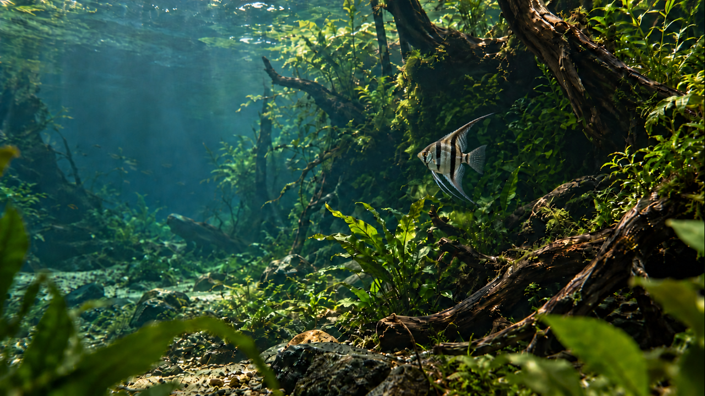
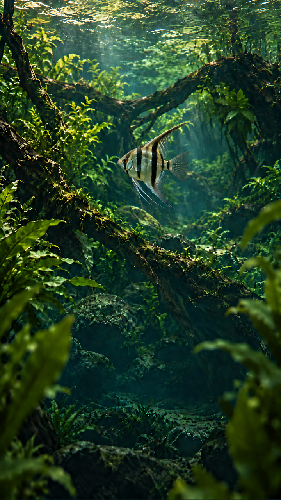

Static composition review · 14 October 2026
Aquatic World — the visible swim
Refined navigation and phone copy, with one visible angelfish in each independent composition. The route is a proposed body-center path; these stills do not establish natural motion or a seamless loop.
Desktop · midpoint

Fish fin span ≈ 25% of source height. It emerges from the right root pocket, follows a short leftward arc, turns into depth and returns behind the same pocket. Copy stays outside the visible swim corridor.
Phone · midpoint

Fish fin span ≈ 18% of source height. An independent upper-middle arc returns to the arch pocket. The lower reading block is raised, leaving room below the action and below the fish.
Proposed ten-second route
- 0–1s: fish concealed behind the root-and-leaf pocket.
- 1–4s: progressive emergence, then a relaxed forward swim to the shown midpoint.
- 4–7s: a gradual turn into depth. The full fin envelope stays clear of the navigation and reading areas.
- 7–9s: forward travel back behind the same pocket; occlusion covers body and fins progressively.
- 9–10s: fish fully concealed while subtle water and leaves remain alive.
Gold arrows show a schematic body-center path. The green box marks the intended fully visible fin corridor; partial emergence/return occurs at the pocket. The dashed fish box is an approximate manual visual bound, not automated anatomy detection. Timing and speed remain to be tested in a future film.
Static layout specimens only. Brand, navigation, Menu and collection action are decorative. The review toggles work locally; no movie, form, provider request or website release is included.